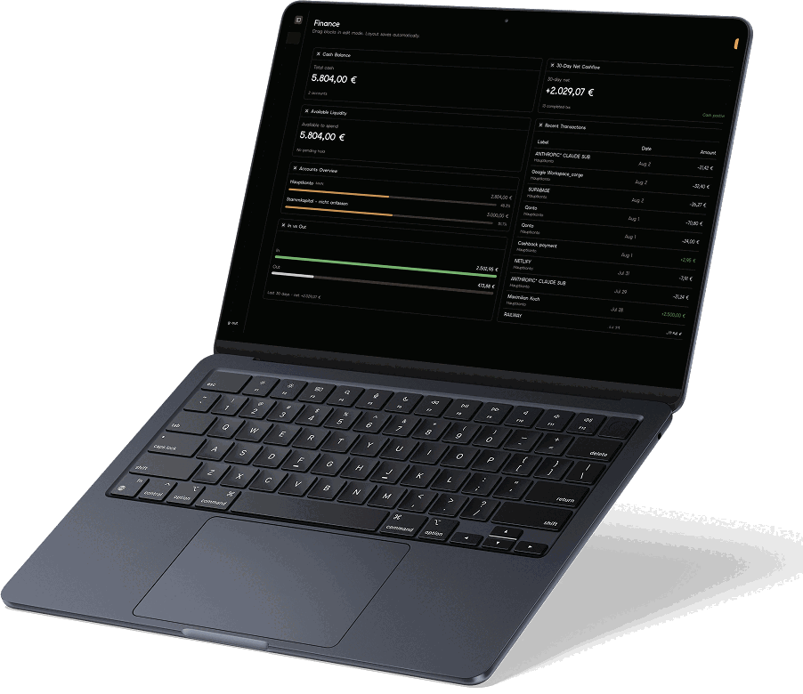
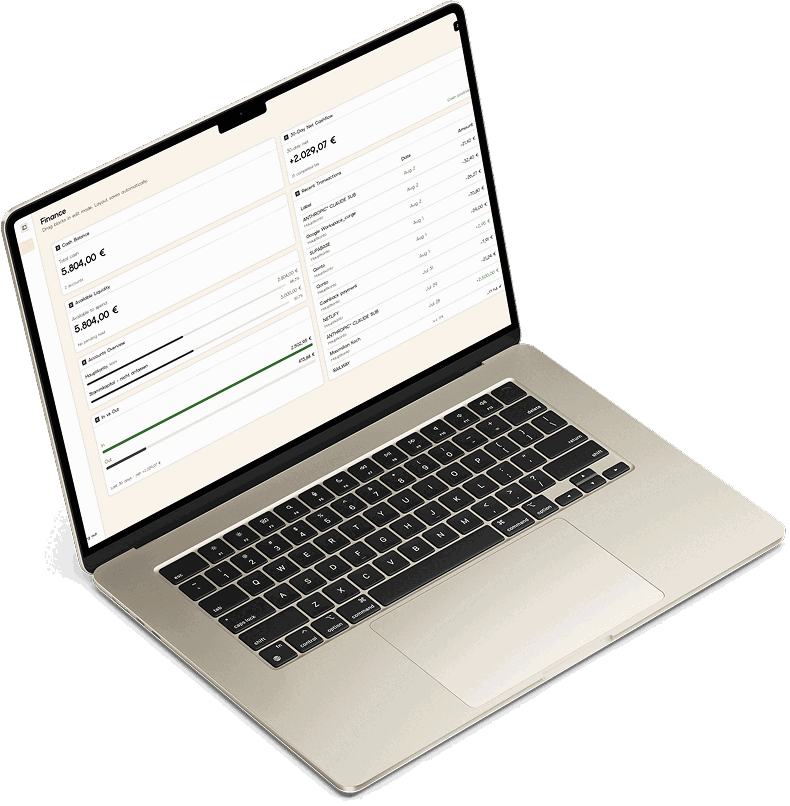

finally a beautiful dashboard
Bussola puts the numbers you check every day — deploys, errors, revenue, cash — on one canvas you actually want to look at. Nine sources, 52 widgets, no tab graveyard.
Why Bussola
One cockpit for infra and money
You check deploys and errors to know things are up. You check MRR, cash and open invoices to know where you stand. Today that lives in five to eight separate dashboards, each with its own login. Bussola is built to hold infrastructure and finances in one view — for solo founders and small teams, not for a data team.
Not a homelab board
Container dashboards tell you a service is running. They cannot tell you whether the month is going well.
Not a BI project
No warehouse, no modelling layer, no onboarding call. Paste a token, get a widget — the setup is minutes, not a quarter.
Not single-purpose
Analytics shows traffic. Monitoring shows infra. Neither answers “are we fine?” in one glance. This does.
How it works
Your dashboard never calls an API
A background worker refreshes each connection on its own schedule and stores a snapshot. Opening a dashboard reads that snapshot locally — so upstream traffic scales with how many connections you have, never with how often you look.
Connect
Paste an API token. Bussola makes a real request before saving, so a bad key fails now instead of silently at render time.
Compose
Drag, drop and resize widgets on a grid. Keep separate canvases for money, infra and clients. The layout saves itself.
Glance
A failing connection backs off instead of hammering an API, and stops after ten failures rather than getting your token banned.
What you get
Everything on one canvas
Dashboard canvas
Drag, resize and add widgets on a real grid. Keep multiple saved layouts per account for different views of the business.
More than one of anything
Two Stripe accounts, three Railway workspaces, a client’s Qonto next to your own. Each widget picks which one it reads, and can narrow to a single project.
Encrypted connections
Credentials are per user and sealed with AES-256-GCM before they touch storage, with a live connection test the moment you add one.
Sample data by default
Until a source is connected, every widget renders clearly-labelled sample data — you see what it does before pasting a token.
Sharing & alerts
Read-only dashboard links for clients and co-founders. Email alerts on failed deploys or low cash; Slack and Discord on Team.
History that is real
One sample per connection per hour, pruned to your plan — so “30 days” and “12 months” describe the data, not the marketing.
MCP server
Point an agent at Bussola: it reads every connector and manages your dashboards. Credentials stay web-UI only, always.
Light & dark
One canvas, two moods
Not a filter over a light theme — both are drawn from the same palette, in Elms Sans, with contrast checked on each. Bussola follows your system by default, and takes your word for it when you override.


Connectors
Connects what you already use
Every source that ships today is API-key based: paste a token, pass the connection test, done. No OAuth waiting room, no review queue.
Trust
Your keys, your data, your call
Bussola reads. It does not restart your services, refund your customers or move your money — and the code that proves it is public.
Read-only by design
Connectors only ever fetch. There is no code path that writes to a third-party system.
Encrypted at rest
AES-256-GCM on every stored secret, and nothing is written to logs in the clear.
No third-party identity
Sessions live in your own database. No external identity provider sits between you and your data.
Leave any time
Self-host the same code on your own Postgres. The hosted plan is convenience, not lock-in.
Pricing
Fair, and never metered on connectors
Connectors are the reason to use Bussola, so they are never rationed. Plans differ on dashboards, seats and history.
Look around
Enough to connect a source and see a real dashboard.
No card, no time limit
- 1 dashboard, 4 widgets
- All connectors
- 7 days of history
For one founder
Running the whole thing on your own.
or 108€ / year — 9€ / month
- 5 dashboards, 8 widgets each
- 30 days of history
- Email alerts + MCP server
For a small team
Five seats and client-ready share links.
or 384€ / year · +8€ per extra seat
- 20 dashboards, 12 widgets each
- 12 months of history
- White-label sharing, Slack & Discord
Run it yourself
MIT-licensed, on your own infrastructure.
No limits, no billing code running
- Every feature, no plan gating
- Your database, your keys
- Community support on GitHub
Questions
Good to know
Do I have to connect anything to try it?
No. Until a source is connected, every widget renders clearly-labelled sample data instead of an empty box, so you can build a canvas and see exactly what each widget does before pasting a token.
Is the hosted version the same code as the open-source one?
Yes — one codebase, selected by an edition flag. Hosted adds accounts, billing and plan limits; self-hosted never constructs a billing client and has no limits at all.
Can Bussola change anything in my accounts?
No. Every connector is read-only, and writing to third-party systems is deliberately out of scope — that needs its own confirmation and audit design before it would be safe.
What happens if a token is revoked?
The connection backs off exponentially, at most hourly, and stops syncing after ten consecutive failures. The widget then asks you to reconnect, so a dead token stops generating traffic instead of being retried forever.
Beautiful, and truly yours
Self-host it for free, or let the hosted version handle the ops. Either way, your data and your keys stay yours.